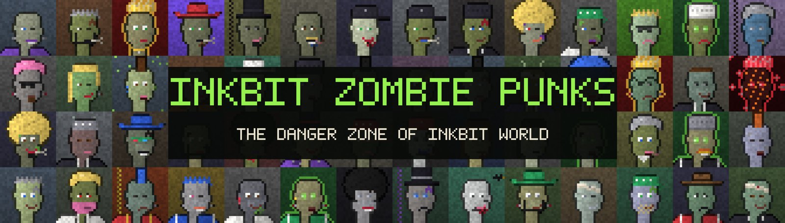

INK STREET The Inkbit Exchange is hiring 7,777 brokers · opens Oct 28, 20:00MARKET A Whale was seen scooping the dip with a spoonPET MEADOWS Census closes at 5,983 · one Golden Dragon registeredUNCHARTED ISLE 4,444 Wild Ones · ten tribes · the First InkDANGER ZONE Quarantine breaks Oct 30, 20:00APEPIXEL CITY 11 Misprints still hiding in the stackNOTICE Inkbit never DMs you to verify your walletINK STREET The Inkbit Exchange is hiring 7,777 brokers · opens Oct 28, 20:00MARKET A Whale was seen scooping the dip with a spoonPET MEADOWS Census closes at 5,983 · one Golden Dragon registeredUNCHARTED ISLE 4,444 Wild Ones · ten tribes · the First InkDANGER ZONE Quarantine breaks Oct 30, 20:00APEPIXEL CITY 11 Misprints still hiding in the stackNOTICE Inkbit never DMs you to verify your wallet

District 5 · The Danger Zone
Inkbit Zombie Punks
3,333 infected punks sealed behind hazard tape.
WHERE THEY CAME FROM
One bottle in the old print shop had gone bad since 1999. Wrong colour, wrong smell. When it finally spilled, whoever was drawn with it turned green and grey, and their lines began to rot.
The city called it Inkrot. The district was sealed behind hazard tape and renamed the Danger Zone.
WHO THEY ARE
Three Patient Zeros started it all: Emerald, Crimson and Prism. Then came the Alpha Strains, the Mutants, the Horde Leaders with their gold virus crowns, and the Infected Elite with toxic glowing eyes.
WHAT THEY DO
They wait. On October 30 the tape gives way. The infection stage of every punk, from Fresh Bite to Feral, is written on-chain and revealed after mint.
A boat came back from the far east of the map this week, carrying sketches of an island nobody ever finished drawing: volcanoes, caves, campfires and ten tribes.
The explorers say the islanders call themselves the Wild Ones, and that they made the very first ink. If that's true, they may also know how to make Pure Ink, the only rumoured cure for Inkrot.
Guards at the Danger Zone border report that the hazard tape is fraying faster than expected. The quarantine is now expected to break on October 30 at 20:00.
Residents of the Pet Meadows are asked to keep their pets indoors.
The Ink Chemist, the ape on Press Card 07, hasn't been seen at the print shop in days. The lab was left open, with blue ink drops leading to the harbour.
A ticket seller says the Chemist bought a single boat ticket, heading east. Towards the Uncharted Isle.